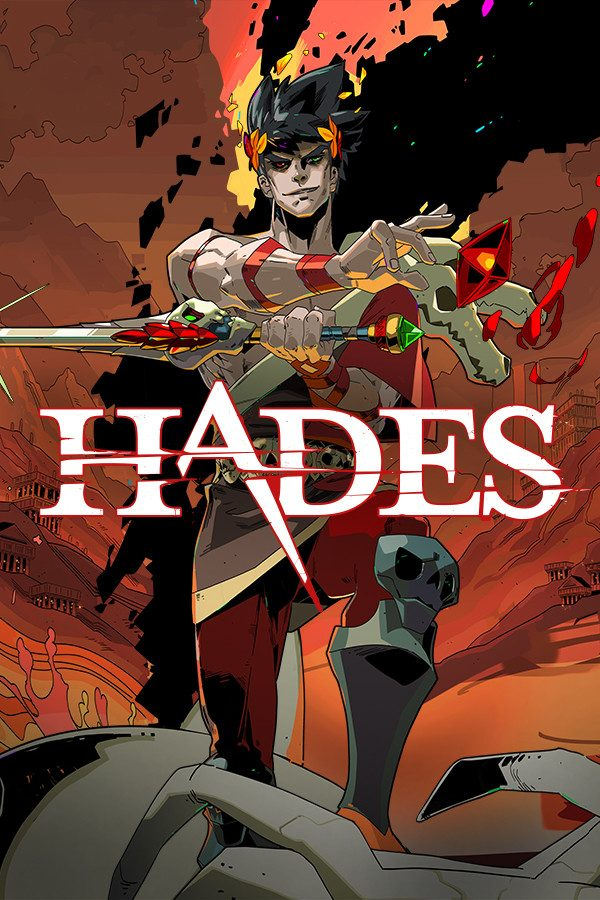
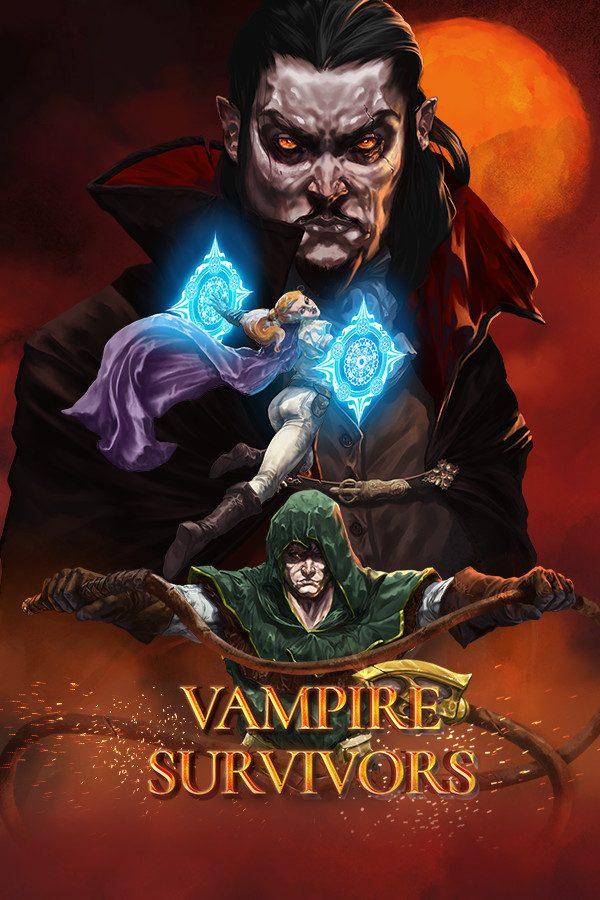
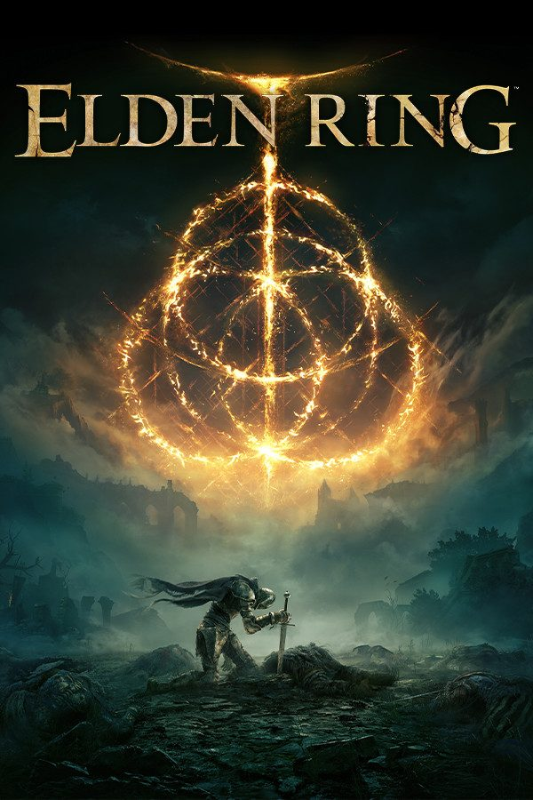
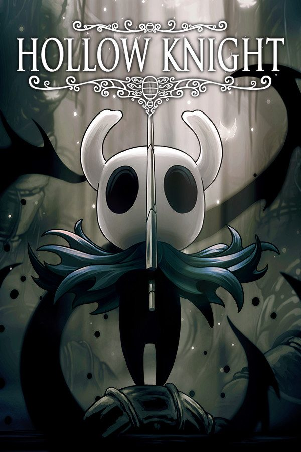
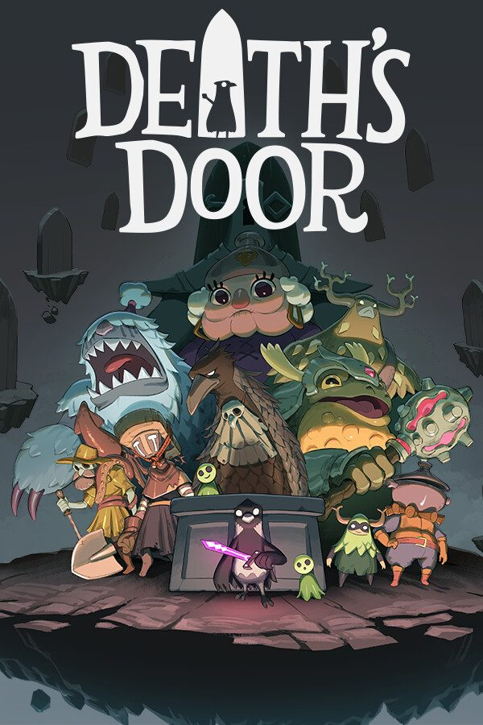
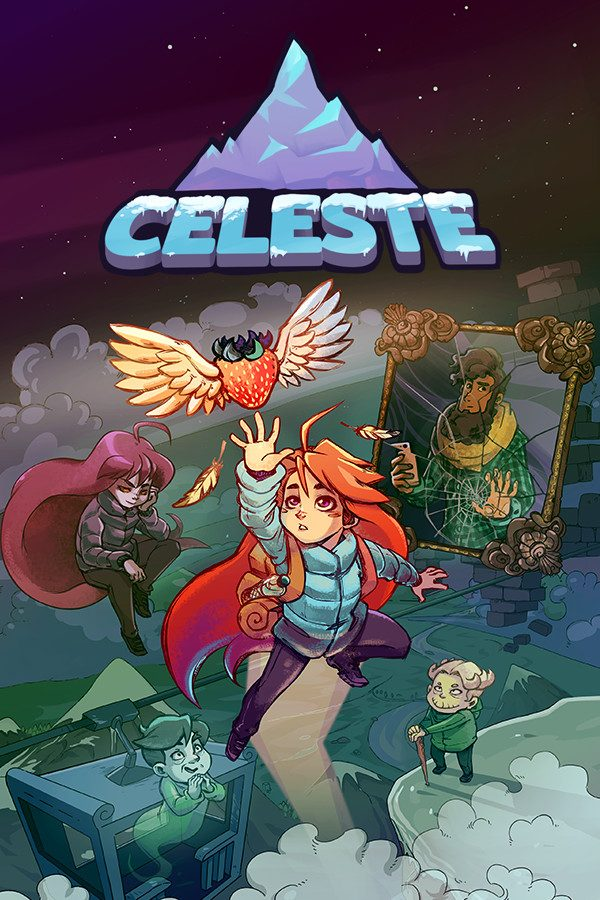
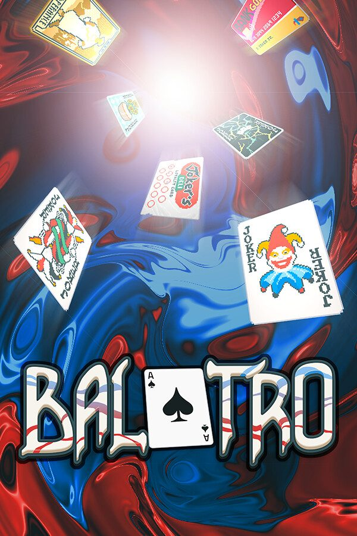
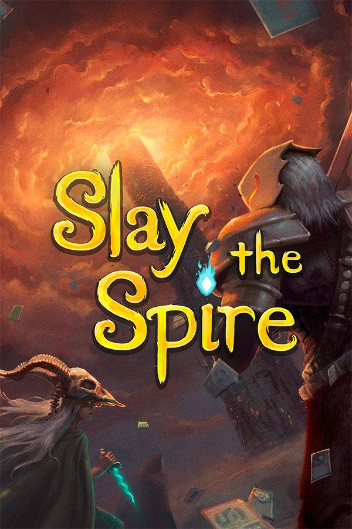

Did you suddenly find yourself with no time to play? Or maybe you have but just not in the longer sessions you were used to? I sure felt a bit between the two recently! And so this site was born to recommend games especially to people like me: someone who loves gaming but with a backlog growing faster than what free time allows. If you landed here for this reason, I hope you find these reviews useful. However, if you are here just to read them, I hope you have a good time!
 Latest review · March 28, 2026
No rest
Strongly recommended
Hades — The Perfect Short-Session Game
A masterclass in respecting your time. Each run takes 20–45 minutes, with meaningful progression even when you die.
Also new · March 22, 2026
Turn on
Recommended
Vampire Survivors review
The definition of "just one more run": thirty minutes, one hand on the stick, done before the nap ends.
Latest review · March 28, 2026
No rest
Strongly recommended
Hades — The Perfect Short-Session Game
A masterclass in respecting your time. Each run takes 20–45 minutes, with meaningful progression even when you die.
Also new · March 22, 2026
Turn on
Recommended
Vampire Survivors review
The definition of "just one more run": thirty minutes, one hand on the stick, done before the nap ends.
All reviews
Showing 8 reviews

No rest Hades Switch OLED
Turn on Vampire Survivors Legion Go
Turn off Elden Ring PS5
Rest mode Hollow Knight Switch OLED
Turn on Death’s Door Switch OLED
Turn on Celeste Legion Go
No rest Balatro Legion Go
Rest mode Slay the Spire PS5No reviews match these filters yet.
How the verdict works
Every review ends with the state of a PS5's light strip.
So good it keeps the console awake. You will lose sleep over it.
Worth your limited hours. Boot it up.
Fine in short doses, or great with caveats for a busy schedule.
Not worth the little free time you have.